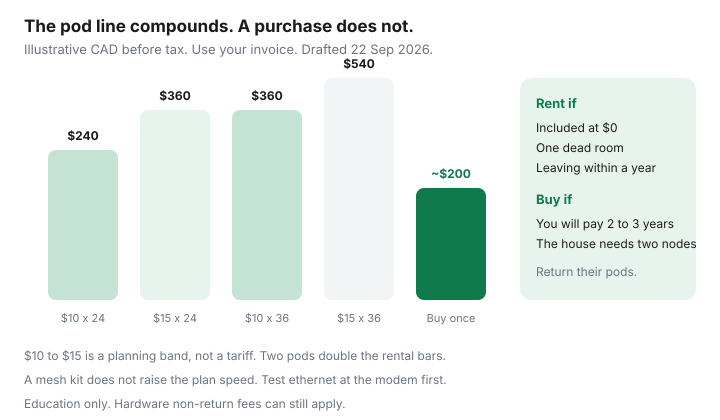

Internet · Canada
Mesh Wi-Fi vs ISP Extender Rentals in Canada: Cut the $10–$15/Month Pod Fee
The internet tier is the number people negotiate. The Wi-Fi pod is the number that stays. A Canadian household that rents one extender at $10 to $15 a month, then adds a second “for the basement,” can spend more on radios than on the promo they fought for. Mesh you buy once is not magic, and it is not always cheaper. This is the rent-versus-buy arithmetic, plus the return step that keeps a leftover fee off the final bill. Education only.
Disclosure: Education only. Mesh Wi-Fi systems and routers are an offer type. Saving Optimizer does not currently claim a hardware partnership, and this page does not rank models. A later partner link would not change the break-even. The $10 to $15 band is a planning range, not your invoice. Confirm the pod line before you buy anything.
Key takeaways
- At $10 a month, one pod is $240 over 24 months and $360 over 36. At $15, those totals are $360 and $540. Two pods double it.
- If the term already includes pods at $0, buying mesh does not save the rental until the credit ends. Read that month.
- An ISP extender is enough for one dead room, a short lease, or a stay under about a year. It is a poor deal when you will pay it for three years in a house the radio cannot cross.
- Test ethernet at the modem before you buy anything. A slow line will not speed up because the pod is newer.
- Return rental pods with photos and a receipt. A non-return charge is still allowed. It is not a banned activation fee.
Add up rental pod fees over 24 and 36 months
This guide uses $10 to $15 per pod per month because that is the band households keep finding on Canadian Wi-Fi-extender lines, beside gateway rentals that community bills often show near $10. Your PDF invoice is the source. If the line is missing, you are not paying it. If it is $5, use $5. If two pods are $10 each, use $20.
| What you pay | 24 months | 36 months |
|---|---|---|
| One pod at $10 | $240 | $360 |
| One pod at $15 | $360 | $540 |
| Two pods at $10 each | $480 | $720 |
| Two pods at $15 each | $720 | $1,080 |
| Buy a two-piece mesh (illustrative $200 to $350) | $200 to $350, once | Same hardware, if it still fits the space |
Break-even is purchase divided by the monthly you stop paying. A $200 kit against a $20 two-pod rental is 10 months. Against a single $10 pod it is 20 months. Provincial tax sits on both the rental and the purchase. If you leave the ISP in month eight, a $300 kit you cannot resell is the expensive choice. If you will be in the house for three years, the rental is the expensive choice.

When an ISP extender is good enough, and when it is not
Rent the pod, or keep the one they included, when:
- One room is weak and the rest of the home is fine. A single extender placed in the hall can be the whole project.
- You are in a rental you will leave inside a year, or you cannot drill, and selling used networking gear is not a hobby you have.
- The term price already includes whole-home Wi-Fi at $0. Buying a second system to “own it” doubles the radios for no save. Calendar the month that inclusion ends, and decide then.
- The gateway is Wi-Fi 6 and the dead spot is placement, not hardware. Moving the modem off the floor of a coat closet is free.
Buy your own mesh when the rental will run for years, the home is more than one floor, or the ISP pod requires their app and a monthly line you have already paid past the break-even. Condo concrete and foil-backed insulation defeat a single gateway no matter which logo is on it. A faster internet tier will not walk through that wall. The speed guide makes the same point about the plan.
Buy-once mesh layouts for Canadian houses and condos
You usually keep the ISP modem. It is the path to their network, especially on fibre, where the optical terminal is not yours to replace. Details of approved cable modems are in buy versus rent. The mesh is the Wi-Fi layer:
- Apartment or small condo. Often one decent router, not a three-pack. Place it near the centre, not in the entry closet beside the electrical panel.
- Two-storey house. Two nodes. One at the modem, one on the other floor, with ethernet between them if you can fish a cable or use existing phone-line conduit. Wireless backhaul works and is slower.
- Long bungalow or a house with a basement office. Put a node at the top of the basement stairs, not beside the furnace and the washer. Metal appliances are a wall.
- Rental with no drilling. Wireless backhaul and flat ethernet along the baseboard. Accept a weaker link rather than a hole you must patch.
Turn off the ISP gateway’s Wi-Fi if your mesh is running, or bridge the gateway, so two networks are not using the same name and fighting. If the gateway has no bridge toggle, use different network names and connect devices only to yours. Leave the gateway Wi-Fi up only for equipment that must see it.
Return rental gear without a residual fee
The June 2026 activation-fee ban does not cover a pod you keep. CCTS still lists equipment non-return as a charge that can be allowed. Before you swap:
- Photograph each pod’s serial number next to the account number.
- Ask the ISP for the return path in writing: courier label, store drop-off, or a box they mail. “Just recycle it” is not a return.
- Drop it off while the account is still open. A return after the final bill is how fees post to a closed account and then a collection note.
- Keep the receipt until the next invoice shows the rental at zero and no non-return line.
If you are moving, the pods go with this checklist, not in the moving truck as if they were yours. See transfer or switch.
Placement that beats buying another node
Try this before you add hardware, rental or owned:
- Modem or main node at chest or eye height, away from the microwave, the cordless phone, and a fish tank.
- The office on ethernet. A $15 cable outperforms a third pod for one desk.
- 5 GHz or 6 GHz for the room you are in; 2.4 GHz only for the device at the back of the yard. Splitting names makes this obvious.
- One network name across a mesh system so phones do not cling to the far node.
- A channel scan if the condo is a stack of identical gateways all on the same defaults. Your own mesh lets you move. Their pod app sometimes does not.
If a laptop beside the modem, on ethernet, is already slow at 8 p.m., stop shopping radios. The plant or the plan is the constraint. Call that a speed problem, not a pod problem.
A break-even you can do on the invoice
Write three numbers on the bill: pod monthly, how many months you expect to stay, and a mesh price you would actually pay today. Multiply the first two. If the product is larger than the mesh price by enough to matter after tax, and the layout above needs more than one radio, buy. If you will move before the quotient, or the pod is included, rent. Revisit when the inclusion credit ends. That is the whole framework. It does not require a particular brand, and it does not require the internet tier to change.
Sources & date stamps
- Planning band of $10 to $15 per pod per month — household bill pattern used for the arithmetic on this page, 22 Sep 2026. Not a tariff. Gateway rentals near $10 are the community pattern described in the modem guide, separate from pods.
- CCTS fee page, posted 2 Sep 2026, re-read 22 Sep 2026 — optional equipment you choose can be billed; equipment non-return can be billed; activation fees are a different rule.
- CRTC 2026-43 — does not convert rental hardware into a free gift. Used 22 Sep 2026.
Frequently asked questions
Is $10 to $15 per pod the price every Canadian ISP charges?
No. It is the planning band this guide uses because that is the range households keep seeing on pod lines. Your invoice is the number that matters. If the pod is included at $0 for a term, the buy-versus-rent save is zero until that credit ends. Read the month the credit dies.
Will a mesh kit make a slow plan faster?
It can make the speed you already pay for show up in more rooms. It cannot raise the plan's upload or fix a congested node. Test a laptop on ethernet beside the modem first. If that test is slow, the problem is the line, not the hallway.
Can I keep the ISP modem and add my own mesh?
Usually yes. Put the ISP gateway in bridge or pass-through if that toggle exists, then let your mesh run Wi-Fi. Two radios both shouting on the same defaults will fight. Fibre optical terminals stay with the ISP. You are adding Wi-Fi, not replacing the optical terminal.
What if I move and the pods are still on the account?
Return them on the old account with a receipt and photos of the serial numbers. A non-return charge is still allowed when the contract says so. CCTS will not treat a missing pod as a banned activation fee.
When is renting the pod the sensible choice?
Short stays, a single dead room, a pod the term already includes, or a rental where you cannot run ethernet and you will leave within a year. Buying hardware you must sell in eight months often loses to one included extender.